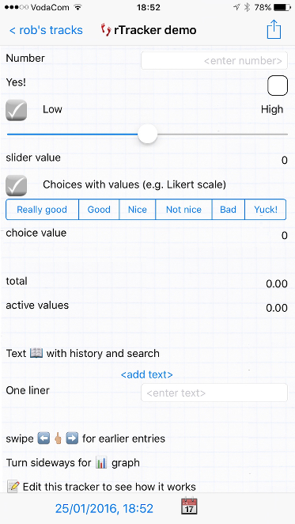

Info entries can also have URLs, which activate when tapped. In iOS these can take you to web pages or activate other apps with URL schemes.
See How to use an Info value.

| number |
Integer or real |
 |
| yes/no | Also known as a boolean, or just a checkbox. Besides the obvious applications, also useful for the start and end of functions. See the Sleep and Car trackers. | |
| slider |
Can set range and initial value. Best for when you don't want to pick an actual number for the value you are tracking, but know when something is 'better' ore 'worse'. | |
| choice | Up to 6 radiobuttons, with your choice of labels. Set the choice labels using the 'gear' options button when selecting this data type. The labels are included in the .csv export file. Set arbitrary values for each choice to build questionnaires with Likert scales. | |
| textbox |
Multiple lines, history, contacts. The textbox is for longer entries, such as lists. It remembers previous entries for re-use and can access your contacts, such as for guest or gift lists. For graphing, it can optionally use the number of lines for each entry as the value. | |
| text |
When one line or just a word is all
you need. |
|
| info |
Just a line of text
(or a blank line) in your tracker - but adds real
possibilities. A value can be set which will be stored with
each entry; this can be used with shared trackers to identify the
source when CSV files are merged back together. Info entries can also have URLs, which activate when tapped. In iOS these can take you to web pages or activate other apps with URL schemes. See How to use an Info value. |
|
| function |
Specify over multiple entries or
going back a fixed time, including change (delta), sum, average, and
elapsed time between entries. See How
to
add a function? |
|